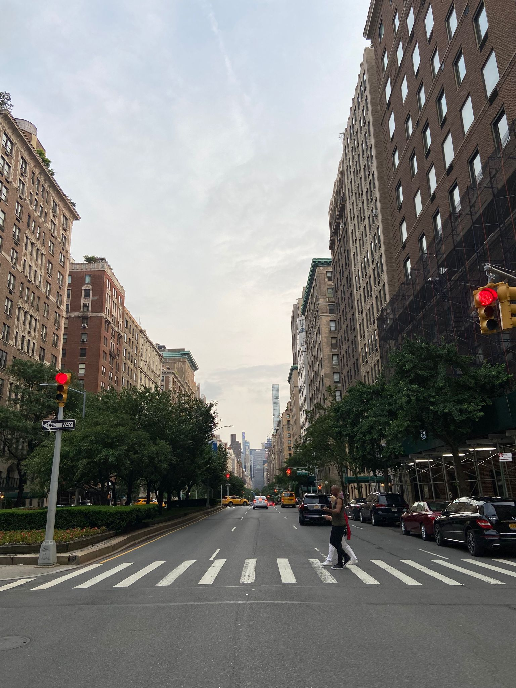
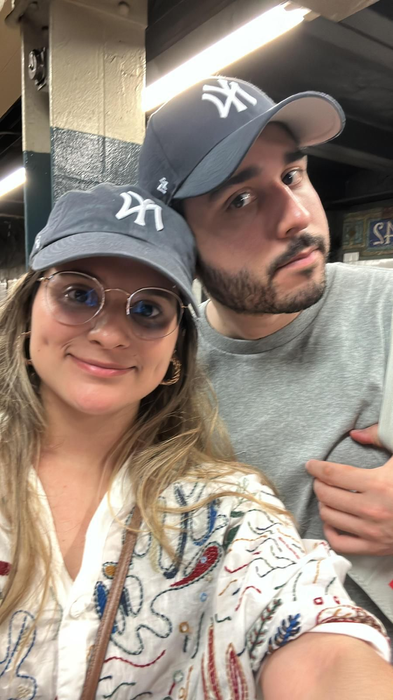
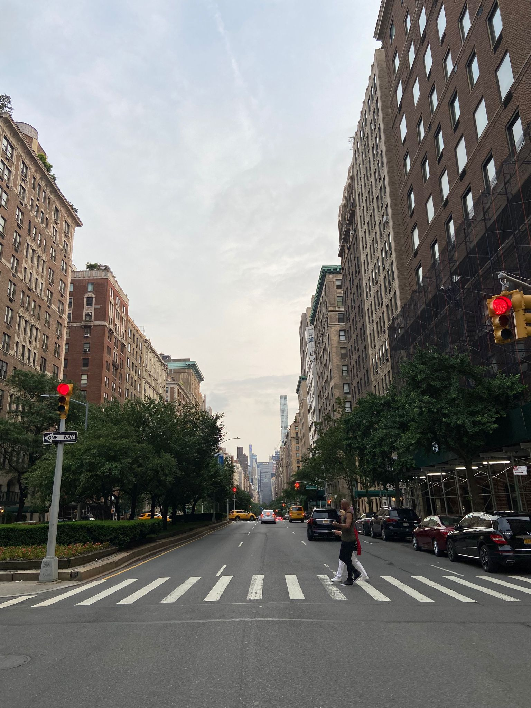
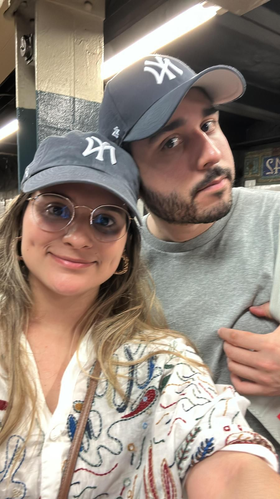

New York City
New York City, is the most populous city in the United States. It lies at the mouth of the Hudson River in the southernmost part of the state of New York. New York City has a population of approximately 8.2 million people. The New York Metropolitan Area, which spans lower New York, northern New Jersey, and southwestern Connecticut, has a population of 18.7 million, making it the largest metropolitan area in the U.S. As of 2014, it was one of the 15 largest metro areas in the world. New York City is a center for media, culture, food, fashion, art, research, finance, and trade. It has one of the largest and most famous skylines on earth, dominated by the iconic Empire State Building. click this link to see the full article.
 



Boroughs
New York City consists of five boroughs, which are five separate counties. Each borough has a unique culture and could be a large city in its own right. Within each borough individual neighborhoods, some several square miles in size, and others only a few blocks in size, have personalities lauded in music and film. The five New York boroughs are:
Manhattan (New York County)
The famous island between the Hudson and East Rivers, with many diverse and unique neighborhoods. Manhattan is home to the Empire State Building in Midtown, Central Park, Times Square, Wall Street, Harlem, and the trendy neighborhoods of Greenwich Village and SoHo.
Brooklyn (Kings County)
The most populous borough, and formerly a separate city. Located south and east of Manhattan across the East River. Known for the Brooklyn Botanic Garden, Prospect Park, The Brooklyn Museum, The New York Aquarium and a key NYC landmark Coney Island.
Queens (Queens County)
Located to the east of Manhattan, across the East River, and north, east, and south of Brooklyn. With over 170 languages spoken, Queens is the most ethnically diverse region in the United States, and one of the most diverse in the world.
The Bronx (Bronx County)
Located north of Manhattan Island, the Bronx is home to the Bronx Zoo, the New York Botanical Gardens, and the New York Yankees professional baseball team.
Staten Island (Richmond County)
A large island in New York Harbor, south of Manhattan and just across from New Jersey. Unlike the other boroughs, Staten Island has a somewhat slower pace and has less density. It contains several parks and a zoo.